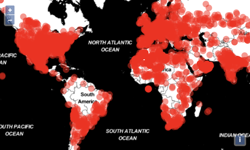
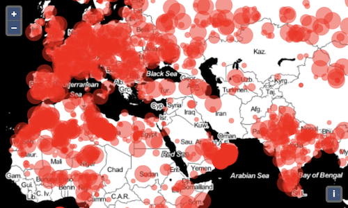

Rendering points with WebGL
In the previous step, we rendered point features with the normal vector layer. This layer uses the 2D canvas context for rendering. With this layer, you can render tens of thousands of points – as long as you are careful about writing efficient styling code. For rendering larger numbers of points, or to do more efficient dynamic styling, WebGL is a good solution. OpenLayers has a growing set of utilities for rendering with WebGL. WebGL rendering is currently limited to points, and that is what we'll do in this exercise.
First, we'll import the constructor of the WebGL-enabled points layer. This layer is an easy-to-use entry point for leveraging the advantages of the WebGL technology.
This is a replacement for the VectorLayer import, which you can now remove.
Replace the const meteorites... assignment with an instance of your WebGLPointsLayer using the same vector source as before.
Tada! Meteorite impact locations rendered with WebGL.

You can see that we specified a style parameter when creating the layer, and that this style allowed us to specify the appearance of the points (red, semi-transparent circles).
Changing the style of a WebGL layer is quite different from the rest of the library. Instead of using the Fill, Stroke and Image classes like other vector layers, we simply have to provide an object with the style parameters. The supported properties for this object are pretty straightforward: opacity, color, size, offset, src (for images) and symbolType (which can be circle, square, triangle or image).
WebGL layers use a completely different rendering system, and the style object is actually transformed dynamically into fragment and vertex shaders.
By navigating in the map you might already notice a performance improvement from the previous step where we were using a standard Canvas 2D layer.
Now, I think we can all agree on the fact that this map isn't great to look at: that is probably because each and every point has the same styling.
Let's begin by sizing our circles depending on the mass of the meteorite. To achieve this, we're replacing the size of the style with the following expression:
This expression results in a minimum size of 8 pixels, which can grow by 18 pixels depending on the mass of the meteorite,
The WebGLPointsLayer class supports this kind of expression for the numerical attributes of its style (size, opacity, color components, etc.).
An expression is composed of operators that are expressed as arrays like so:
import:'operator1' import:'operator2' import:'operator3' import:'operator4'
The first operator, get, will read the feature's attribute by its name. The other operators, here showcased clamp, * and +, allow manipulating the output of another operator. In the previous example we used these to transform the meteorites mass values into a final size comprised between 8 and 26.
Looking better and better!
